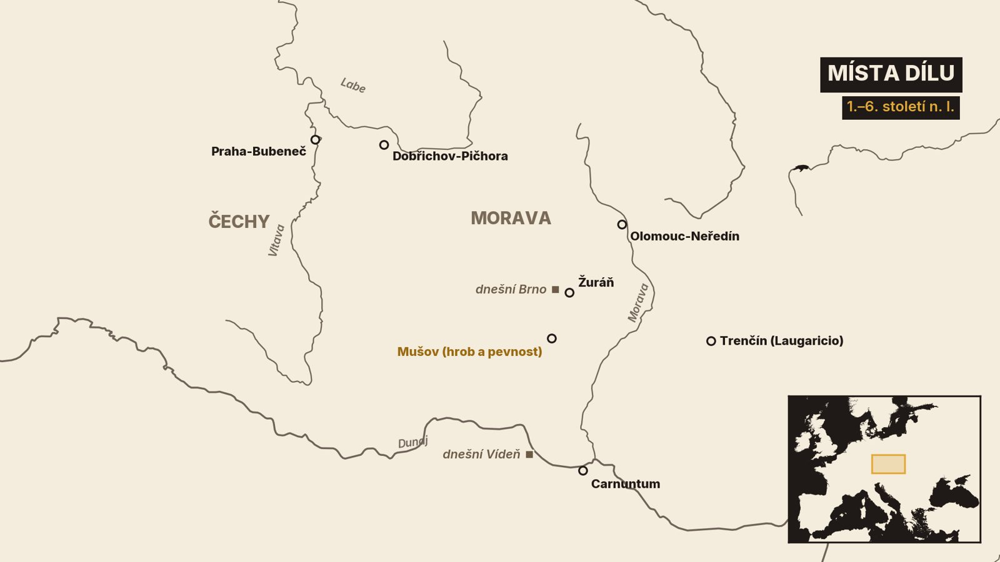
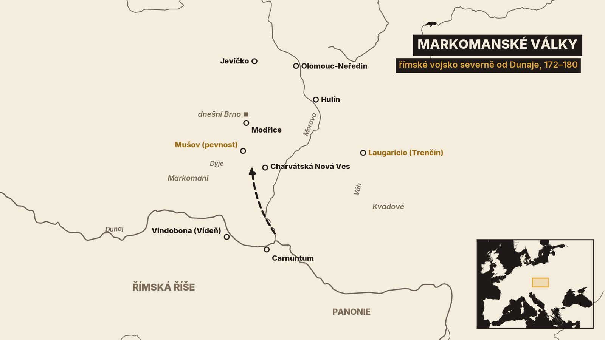
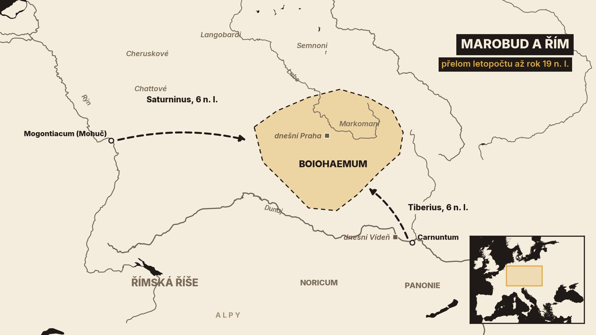
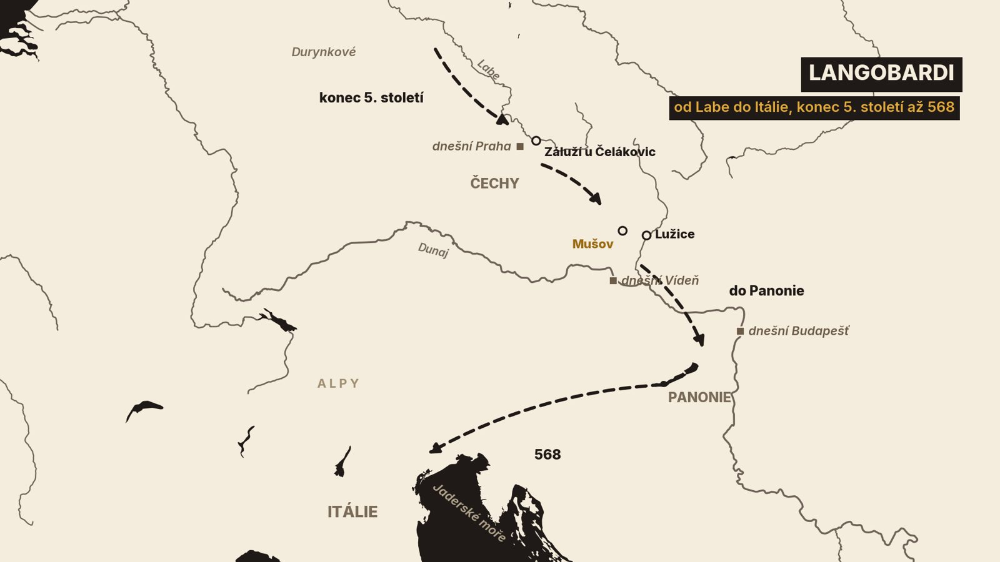

1. Hrob u Mušova
Na podzim roku 1988 se u Mušova na jižní Moravě stavěla nová silnice do Pasohlávek. Při zemních pracích tam náhodou narazili na hrob[9]. Výzkum vedl archeolog Peška z Regionálního muzea v Mikulově[9].
Archeologové odkryli část velké hrobové komory. Měřila asi 6 × 4 metry a původně ji kryla konstrukce ze dřeva a kamení[9]. Hrob někdo vykradl už dávno před nimi. Přesto v něm zůstalo téměř 180 předmětů: stříbrné a bronzové nádoby, sklo, hroty kopí a šípů, kování štítů a šestnáct ostruh, některé zdobené zlatem a stříbrem[9].

Nejznámější je bronzový kotel. Čtyři kruhová ucha na něm drží hlavy vousatých mužů s vlasy svázanými do uzlu[9]. Právě takový účes popsal římský historik Tacitus u Svébů, velké skupiny germánských kmenů[4].
Znakem toho kmene je sčesat vlasy na stranu a stáhnout je uzlem.
Kdo v hrobě ležel? Podle antropologů nejspíš tři lidé, z toho jedna žena[9]. Nejmladší věci z výbavy patří do konce 2. století[9]. A jen půldruhého kilometru odtud stála v té době pevnost římské armády[9]. Badatelé proto soudí, že tu byl pohřben germánský vládce, nejspíš král, kterého podporoval Řím[9]. Je to výklad. Jeho jméno neznáme.

Co dělal germánský král s římským stříbrem na jižní Moravě? A co tu dělala římská pevnost? O tom je tento díl. Projdeme zhruba šest století: od chvíle, kdy do Čech přišli Markomani s králem Marobudem, přes války s císařem Markem Aureliem až po odchod Langobardů do Itálie.
Poprvé v této sérii máme k ruce písemné prameny o událostech přímo v našich zemích[1]. Psali je ovšem Římané a Řekové, tedy sousedé a často nepřátelé[1]. Jak tytéž události viděli Germáni, se z nich nedozvíme. Vedle textů proto budeme číst i to, co našli archeologové.
Začneme na přelomu letopočtu v Čechách.
2. Marobud a Markomani
Minulý díl skončil u Keltů. Římané znali Čechy pod jménem Boiohaemum[2]. Tacitus na konci 1. století napsal, že to jméno po keltských Bójích zůstalo, i když se obyvatelé změnili[4].
Noví obyvatelé byli Germáni. Archeologové je poznávají podle jiných nádob, šperků a hrobů. Nejstarší germánskou kulturu v Čechách nazývají grossromstedtská[1]. Objevila se tu ještě před událostí, kterou známe z písemných pramenů: před příchodem Markomanů[1].
Markomany přivedl jejich vůdce Marobud. Historik Dobiáš kladl jejich příchod nejspíš mezi roky 9 a 6 př. n. l.[1]. Nejpozději to podle něj bylo roku 1 př. n. l.[1]. Souhrnná práce pražských archeologů nazývá Marobuda první historickou postavou české kotliny[1]. Je to první zdejší člověk, kterého známe jménem.

Řecký zeměpisec Strabón o něm píše, že jako mladý muž pobýval v Římě a těšil se přízni císaře Augusta[5]. Nejvíc ale zaznamenal Velleius Paterculus, římský důstojník a Marobudův současník[1][2]. Podle něj Marobud odvedl svůj lid z dosahu Říma do rovin obklopených Hercynským lesem[2]. Sousední kmeny si pak podrobil válkou nebo smlouvami[2]. Velleius ho líčí jako muže urozeného, silného a odvážného[2].
Barbar spíše původem než rozumem.
Jak velkou měl moc? Velleius píše, že Marobudovo vojsko mělo 70 000 pěších. K nim prý patřily 4 000 jezdců[2]. Je to údaj římského autora, žádné sčítání. Dnešní badatelé soudí, že spíš říká, kolik bojovníků dokázal Marobud příležitostně svolat, a to i od spojenců. Nevylučují ani to, že Velleius počet nepřátel záměrně nadsadil[1]. Jeho spis měl totiž oslavit Tiberia, pozdějšího císaře[1].
Stejně opatrně je třeba zacházet s pojmem Marobudova říše. Starší literatura jí kreslila hranice od Dunaje až k Baltu[1]. Podle novější souhrnné práce se rozsah Marobudovy moci prakticky nedá určit, protože pro to chybí opora v písemných i archeologických pramenech[1]. Jisté je, že středem byly Čechy[1]. Souhrnná práce proto mluví o mocenském útvaru nebo o kmenovém svazu a o takzvané Marobudově říši[1]. Slovo stát nepoužívá.
Řím takového souseda nenechal dlouho na pokoji.
3. Řím proti Marobudovi
Roku 6 n. l. se proti Marobudovi vypravila římská vojska ze dvou stran[1][2]. Jedno mělo táhnout od Rýna přes území kmene Chattů. Druhé vedl sám Tiberius z Carnunta na Dunaji[2]. Tacitus později vkládá Marobudovi do úst, že proti němu stálo dvanáct legií[3].
Podle Velleia už obě vojska dělilo od nepřítele jen asi pět dní pochodu[2]. Pak ale vypuklo velké povstání v Panonii, římském území na středním Dunaji[2]. Výprava byla odvolána a k boji vůbec nedošlo[1]. Marobud oslabení Říma nevyužil. Vyjednal si, že zůstane nezávislý[1].
O celém tažení víme jen od Velleia. Část dnešních historiků proto soudí, že je zveličil, a někteří dokonce, že zůstalo jen u plánu[1].
O tři roky později, roku 9, zničili Germáni pod vedením Arminia tři římské legie v Teutoburském lese[1][3]. Arminius poslal Marobudovi hlavu poraženého velitele Vara jako výzvu ke společnému boji. Marobud ji odeslal do Říma[1][2]. Ke vzpouře se nepřidal[1].
Mezi oběma vůdci to skončilo válkou. Střetli se roku 17[1][3]. Ještě před bitvou přešly od Marobuda k Arminiovi dva kmeny, Semnoni a Langobardi[3]. To druhé jméno si zapamatujme, na konci dílu se vrátí. Bitva podle Tacita skončila nerozhodně. Marobud se ale stáhl první a jeho lidé ho začali opouštět[3].
O dva roky později vtrhl do země Katvalda, urozený mladík, kterého Marobud kdysi vyhnal[1][3]. Získal na svou stranu předáky a dobyl královské sídlo i pevnost vedle něj[3]. Tacitus přidává zajímavý detail: byli tam i obchodníci z římských provincií, kteří se v cizí zemi usadili kvůli zisku[3].
Marobud přešel Dunaj a požádal císaře Tiberia o útočiště[3]. Ten ho usadil v Ravenně[3].
Po osmnáct let neopustil Itálii a zestárl; jeho sláva velmi utrpěla přílišnou touhou žít.
A kde stálo jeho sídlo? To nevíme. Dřív se hledalo na keltských oppidech, na Závisti nebo ve Stradonicích. Ta ale byla v Marobudově době už desítky let opuštěná[1]. Dnes archeologové uvažují spíš o místech s bohatými nálezy z té doby, jako je Praha-Bubeneč, Kolínsko nebo Lovosice. Doklad zatím chybí[1].
Kroniky nám daly jména a letopočty. Jak ale Germáni v Čechách žili, ukazují nálezy.
4. Jak žili Germáni v Čechách
Nalezišť ze starší doby římské, tedy zhruba z prvních dvou století našeho letopočtu, je v Čechách skoro tisíc[1].
Nebyla to města. Základem osídlení byla usedlost: nadzemní dům z kůlů a vedle něj jedna až tři polozemnice, menší stavby zahloubené do země[1]. Několik takových usedlostí tvořilo osadu[1]. Opevnění Germáni nestavěli[1].
Mrtvé většinou spalovali[1][10]. Popel uložili do hliněné nádoby, popelnice, a k němu přidali milodary[1].
Nejznámější pohřebiště leží na návrší Pičhora u Dobřichova na Kolínsku. Objeveno bylo roku 1896[1]. Dnes se z něj dá doložit 160 hrobů mužů, žen i dětí[1]. Zhruba v pětině z nich ležely zbraně a většinou také zboží z římských dílen[1]. Nejstarší hroby patří do prvních desetiletí našeho letopočtu, tedy do Marobudovy doby[1]. Archeolog Eduard Droberjar se domnívá, že v těch nejbohatších mohli ležet členové Marobudovy družiny. Je to hypotéza[1].
Římských výrobků je v Čechách té doby neobvykle mnoho[1]. Odpovídá to Tacitově zprávě o obchodnících na Marobudově dvoře[1][3].
Po Marobudově pádu Čechy z písemných pramenů na celá staletí mizí[1]. Těžiště dění se přesunulo na jihovýchod, na jižní Moravu a jihozápadní Slovensko, blíž k Dunaji[1]. Tam se podle archeologů stěhovaly i přední markomanské rody[1].
Řím tu zkoušel jinou politiku než tažení. Družiny Marobuda a Katvaldy usadil za Dunajem a dal jim za krále Vannia z kmene Kvádů[3]. Později klid na hranici zajišťoval tím, že spřátelené krále sám dosazoval[1]. Tacitus to o Markomanech a Kvádech řekl bez obalu[4].
Síla a moc králů však pochází z římské autority. Zřídka jim pomáháme zbraněmi, častěji penězi.
Asi sto padesát let to fungovalo. Pak přišla velká válka.
5. Markomanské války
Říkáme jí markomanské války. Začaly roku 166 za císaře Marka Aurelia a trvaly čtrnáct let[1]. Jméno mají podle Markomanů, ale bojovala v nich řada germánských i negermánských kmenů[1]. Vedle Markomanů to byli hlavně Kvádové a sarmatští Jazygové[6][15].
Zpočátku se Řím bránil. Jeho vojsko oslabila morová epidemie[1]. Kolem roku 170 Markomani a Kvádové prolomili hranici a pronikli až do severovýchodní Itálie, kde zničili město Opitergium[15][20]. Přesný rok antický pramen neuvádí[20].
Pak se válka obrátila. V letech 172 až 175 vedl Marcus Aurelius úspěšný protiútok[1]. Boje se přenesly za Dunaj, na území dnešní Moravy, Slovenska a Dolního Rakouska[15]. Podle brněnských archeologů ovládla římská armáda jižní a střední Moravu[10].
Jak ta válka vypadala očima Římanů, ukazuje Sloup Marka Aurelia v Římě. Jeho reliéfy zachycují výjevy z bojů na germánském území[1]. Je to pohled vítěze.
A co zůstalo v zemi? Římské vojsko si i na krátkou dobu stavělo opevněný tábor. Uvnitř stály jen stany[10]. Kolem vedl příkop, který má v řezu tvar písmene V, a právě podle něj archeologové tábory poznávají[14]. Ve středním Podunají je dnes známo kolem třiceti takových táborů[10]. Řada z nich leží podél Moravy a Dyje, zhruba den pochodu od sebe[10]. Největší zabíraly přes 40 hektarů, jako tábor u Charvátské Nové Vsi na Břeclavsku[8][10]. Ze země ho nepoznáte. Archeologové ho objevili až z letadla[8].
Stopy táborů sahají daleko na sever: k Olomouci, k Hulínu a k Jevíčku[10][19]. Tábor u Jevíčka, objevený roku 2016, je podle archeologa Eduarda Droberjara nejsevernější, jaký z těch válek známe[19]. V Olomouci-Neředíně se na táborový příkop přišlo roku 2001 při stavbě silnice[13]. Keramika z jeho výplně patří do konce 2. století, nebo na počátek století následujícího[14].
Jedno místo se ale od dočasných táborů liší. A vrací nás k hrobu ze začátku.
6. Římská pevnost u Mušova
Je to návrší Hradisko u Mušova, 80 kilometrů severně od Dunaje u Vídně[10]. Z vrcholu je vidět daleko do nivy Dyje a Svratky, kterou v prvních staletích našeho letopočtu hustě osídlili Germáni[10]. Podle brněnských archeologů tu měli Markomani mocenské centrum. I proto si to místo Římané vybrali[10][19].
První vykopávky tu v letech 1926 až 1928 vedl Anton Gnirs, s podporou kanceláře prezidenta Masaryka[10]. Odkryl základy dvou staveb: obytného domu a lázní. Obě měly podlahové topení[10]. Cihly a střešní tašky nesly značku Desáté legie, která sídlila ve Vindoboně, dnešní Vídni[10].
Moderní výzkum začal roku 1984 a ukázal, jak rozsáhlé to místo je[10]. Hradby jsou dnes známy v délce přes dva a půl kilometru. Plocha s římskými stavbami se odhaduje na 30 až 35 hektarů[10]. Val byl obložený nepálenými cihlami. Bylo jich podle archeologů potřeba statisíce, a to ukazuje na pevnost, která měla sloužit dlouho[10].
Před stavbou dnešního aquaparku pak archeologové našli základy dřevěné budovy dlouhé 71 metrů[10]. Podle půdorysu to byla vojenská nemocnice. Takových staveb je z celé římské říše známo čtrnáct a jen tahle stála na území nepřítele[10].
K tomu se hodí zpráva historika Cassia Diona. Píše, že u Markomanů i u Kvádů bylo v pevnostech rozmístěno po 20 000 vojáků[6]. Germánům prý nedovolili v klidu pást dobytek ani obdělávat pole[6]. Sami nouzí netrpěli[6].
Měli i lázně a všeho potřebného hojnost.
Počet vojáků je zase údaj antického autora. Dochovaný řecký text je navíc právě v tom místě porušený[21]. Lázně u Mušova jsou ale skutečné.
A teď zpět ke královskému hrobu. Jeho nejmladší předměty jsou z doby těchto válek[9]. Vedle germánských zbraní v něm ležely věci, jaké se dávaly do hrobů v římských provinciích: lampa, stolek nebo lékařské nástroje[9]. Část stříbrného a bronzového nádobí byla v době pohřbu už víc než sto let stará[9]. Badatelé z toho usuzují, že šlo o dary římských úřadů germánskému spojenci. Pohřbený byl podle nich nejspíš král, kterého v době válek dosadil Řím[9]. Jistotu nemáme.
Od roku 2020 stojí pod Hradiskem návštěvnické centrum[18].
Římané se tu zjevně chystali zůstat. Jak daleko jejich plány sahaly?
7. Nápis v Trenčíně a konec války
Jednu odpověď najdeme na Slovensku. Na hradní skále v Trenčíně je dodnes vytesaný latinský nápis[15]. Říká, že tu pobýval oddíl 855 vojáků Druhé pomocné legie pod velením muže jménem Maximianus[15]. Nápis uvádí i tehdejší jméno místa: Laugaricio[15]. Kdo Maximianus byl a kdy tu jeho vojáci zimovali, víme z jiného nápisu, nalezeného až v Alžírsku[15]. Byla to zima z roku 179 na rok 180[15]. Trenčín leží mimo dnešní Česko. Ukazuje ale, jak hluboko v germánském území tehdy římské posádky stály.
Chtěl Marcus Aurelius z těch zemí udělat provincie? Výslovně to tvrdí Historia Augusta, sbírka císařských životopisů[7]. Cassius Dio píše jen to, že by císař celý ten kraj podrobil, kdyby žil déle[6]. Brněnští archeologové mají za pravděpodobné, že Marcus Aurelius chtěl markomanské území připojit natrvalo[10]. Jisté to není.
Chtěl učinit provincií Markomanii, chtěl i Sarmatii.
Císař zemřel 17. března 180[6]. Jeho syn Commodus brzy uzavřel mír[1][6]. Podle Cassia Diona se Markomani směli scházet jen jednou za měsíc, na jednom místě a pod dohledem římského setníka[6]. Řím za to vyklidil pevnosti v jejich zemi[6]. Vojáci se vrátili za Dunaj[10].
U Mušova po nich zůstal jeden člověk. Uvnitř opevnění našli archeologové kostru mladého muže, uloženou v jámě bez řádného pohřbu[10]. Radiokarbonové datování klade jeho smrt mezi roky 130 a 210[10]. Rozbor DNA a izotopů naznačuje, že mohl pocházet ze Středomoří[10]. Pokud je to tak, byl by to první člověk z římské říše, kterého na Moravě známe[10].
A Čechy? Souhrnná práce o době římské v Čechách z roku 2008 uvádí, že se tam nenašel jediný doklad přítomnosti římského vojska[1]. Ani pozdější objev u Jevíčka na tom nic nemění. Jevíčko dnes sice patří k Pardubickému kraji, leží ale na historické Moravě[19]. Je to stav poznání, ne konečný soud.
Římská hranice zůstala na Dunaji. O dvě století později se dala do pohybu celá Evropa.
8. Stěhování národů a Langobardi
Tomu období říkáme stěhování národů. V Čechách se jím rozumí doba od konce 4. století do konce století šestého[1].
Na jeho počátku stojí vpád Hunů, kočovníků z východu[1]. Jejich moc v Evropě skončila brzy po smrti krále Attily, zhruba v polovině téhož století[1]. Řím jim na počátku 5. století přenechal jednu ze svých podunajských provincií[1].
Čechy leží od Dunaje daleko, ale změny sem doléhaly. Archeologové tu pro 5. století rozlišují takzvanou vinařickou skupinu, pojmenovanou podle Vinařic na Kladensku[1]. Vzácné sklo a další luxusní výrobky z Porýní ukazují, že tu žila vrstva lidí se styky daleko na západ[1].
Na konci 5. století přichází do Čech od severozápadu nová vlna Germánů[1]. Byli mezi nimi Durynkové a Langobardi, tedy kmen, který kdysi odpadl od Marobuda[1][3]. Kolik těch vln bylo a kdo v které převažoval, o to se badatelé přou[1].

Langobardi postupovali dál k Dunaji. Na počátku 6. století porazili sousední Heruly a ovládli kraj severně od Dunaje i s jižní Moravou[1][11]. Za krále Wachona sahala jejich moc od Čech až do dnešního Maďarska[1].
Na Moravě po nich zůstala hlavně pohřebiště. Sídliště z té doby téměř neznáme[11]. Velké pohřebiště leží zase u Mušova. Brněnští archeologové je označují za ústřední langobardskou nekropoli a odhadují tam asi 350 hrobů[12]. Přes dvě stě padesát jich už prozkoumali[12]. Patří do první poloviny 6. století[12]. Jsou mezi nimi mělké hroby skoro bez výbavy i dřevěné komory s bohatými milodary[12]. Našly se tu i dvě stříbrné mince ostrogótských králů, ražené v Ravenně[12]. Červené kameny ve sponách se podle badatelů dovážely až z Indie[11]. Mnoho hrobů ovšem někdo vykradl už dávno[12].
Do doby stěhování národů patří i komorové hroby na návrší Žuráň u Brna. Podle archeologů v nich zřejmě leželi lidé z nejvyšší germánské aristokracie[16]. Z téhož návrší řídil mnohem později Napoleon bitvu u Slavkova[16].
Co o těch lidech řekne DNA? Kosti z moravských pohřebišť se zkoumají v mezinárodním projektu HistoGenes. Výsledky se podle brněnského ústavu teprve chystají k publikaci[12].
Pak Langobardi odešli. Většina kmene se nejdřív přesunula do Panonie, na území dnešního Maďarska[1][11]. Kdy přesně, o tom se vedou spory[1]. Jejich pozdější kronikář Pavel Jáhen zapsal, že odtud vyšli s ženami, dětmi a vším majetkem do Itálie[17]. Pavel k tomu připojuje i rok 568 od vtělení Páně[17]. Velikonoce podle něj tehdy připadly na prvního dubna, Langobardi tedy vyšli druhého[17]. Stejný rok uvádí i dnešní literatura[1][11]. Panonii podle Pavla přenechali spojencům, kterým říká Hunové[17]. Jinde sám vysvětluje, že tak se zprvu říkalo Avarům[17].
Vyšli z ní v měsíci dubnu, za první indikce, druhého dne po svatých Velikonocích.
Souhrnná práce o Čechách klade konec doby stěhování národů do druhé poloviny 6. století. Většina germánských obyvatel tehdy odchází k Dunaji a někteří dál do Itálie[1]. Do našich zemí zároveň postupně pronikají první Slované[1].
Než se k nim dostaneme, shrňme si těch šest století.
9. Co si odnést
Za prvé: krátce před přelomem letopočtu přivedl Marobud do Čech Markomany. Je to první zdejší postava, kterou známe jménem. Jak daleko jeho moc sahala, se určit nedá[1][2].
Za druhé: o Germánech píšou jen Římané a Řekové. Čísla, jako je Velleiových 70 000 pěších, jsou údaje autora, ne změřená skutečnost[1][2].
Za třetí: za markomanských válek, které skončily roku 180, stála římská armáda na Moravě. U Mušova si postavila pevnost s lázněmi a nemocnicí[1][10].
Za čtvrté: v Čechách se doklad římského vojska nenašel. Stopy táborů sahají k Olomouci a k Jevíčku a nápis v Trenčíně leží na Slovensku[1][10][15][19].
A za páté: v 6. století patřily naše země podle souhrnné práce k říši Langobardů[1]. Roku 568 odešli do Itálie[1][17].
Tři otázky zůstávají otevřené. Kde stálo Marobudovo sídlo? Kdo byl muž z královského hrobu u Mušova? A zůstal tu po odchodu Langobardů někdo z Germánů? Tou poslední začneme příště, u prvních Slovanů.


.jpg){kind=link}
.jpg){kind=link}


.jpg){kind=link}


,_RP-P-BI-1238.jpg){kind=link}


.jpg){kind=link}
.jpg){kind=link}
.jpg){kind=link}
,_LVR-LandesMuseum_Bonn_(9510859222).jpg){kind=link}
.jpg){kind=link}

.jpg){kind=link}


.jpg){kind=link}


_Hunnic_cauldron_from_a_burial_found_at_Jędrzychowice_(copy,_1927),_original_in_Pushkin_State_Museum_of_Fine_Arts,_Russia.jpg){kind=link}


.JPG){kind=link}